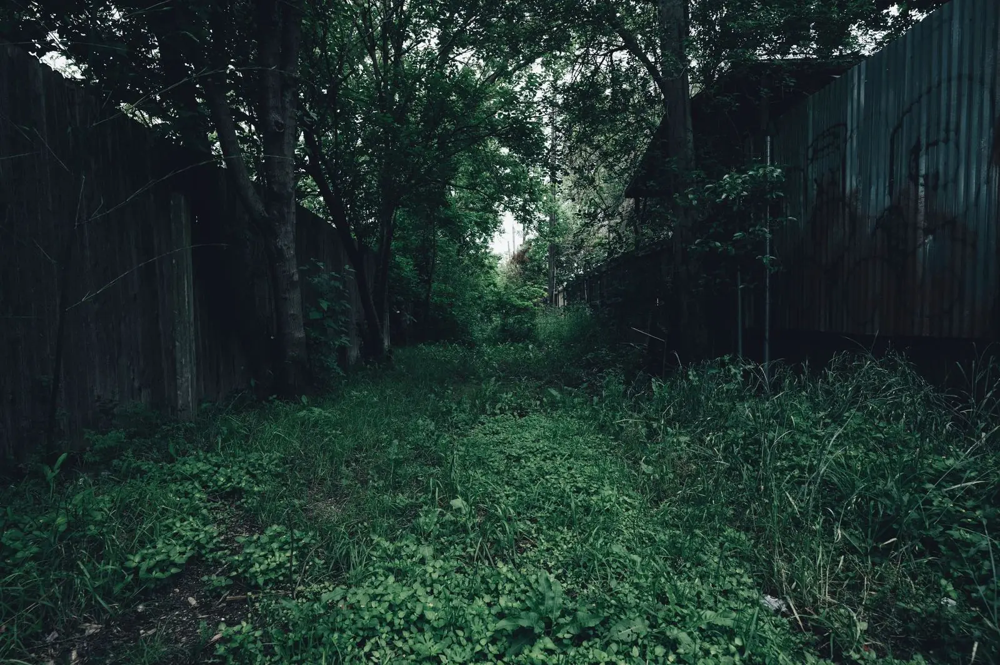
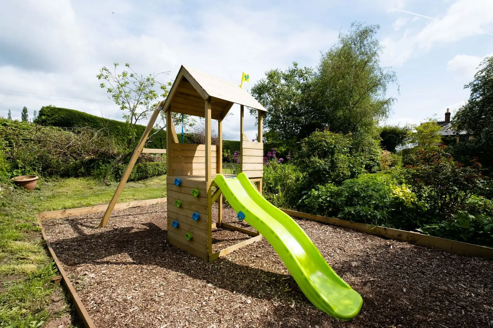
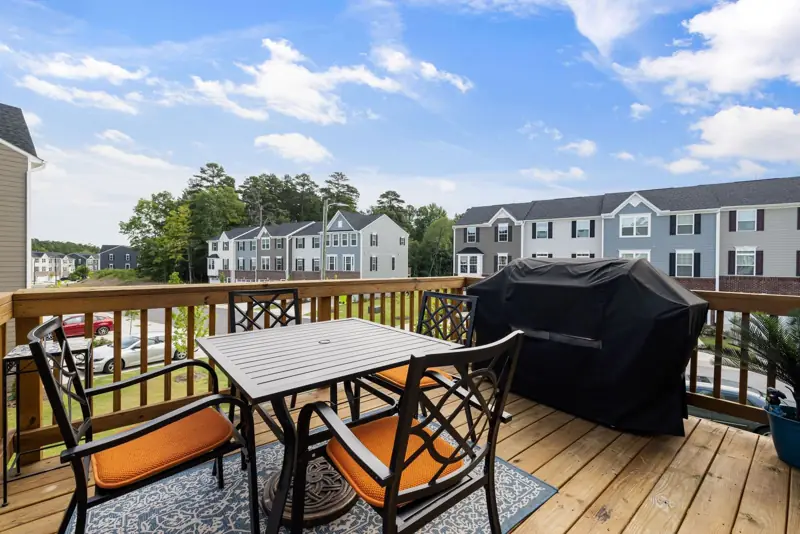

Medium gardens
A garden the whole family uses
A tired lawn, brambles and a falling-down shed turned into a garden with room to eat, room to play and room to relax.
The transformation
Drag to see the change
Family gardens have to work hard. Grown-ups want a patio and a barbecue. Children want space to run and climb. We design so everyone gets their bit.

 BeforeDesign visualisation
BeforeDesign visualisation
The "before" is an illustration and the "after" is a design visualisation of a proposed design, not a photo of a finished job.
What's in this design
The details that make it
- Large sunny patio with room for a dining table and parasol
- Barbecue spot close to the back door
- Children's play area with a climbing frame, slide and swing on soft bark
- Striped lawn that is tough enough for football
- Deep borders along the fence with flowers from spring to autumn
- A blossom tree for shade and colour
Ideal for: Semi-detached and detached homes with a medium garden and a busy household.
Get a free quoteReal gardens for inspiration
The kind of change we make
Stock photos of real gardens like this, to help you picture yours.


Stock photo: beforeStock photo: afterIllustrative pairing: these are stock photos of two different gardens, showing the kind of change we make. They are not a Fernhill project.
Stock photo
Stock photo

Ready to see what your garden could be?
Tell us a little about your space. Sam will come round, listen, and send a clear written quote. No cost, no pressure.